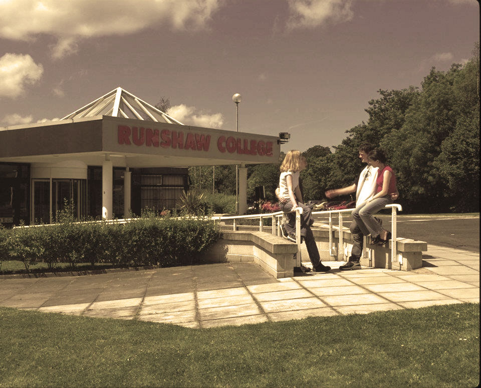

About Runshaw
Runshaw college was opened in 1974, In the 1990s the college started an extensive building project. Each new building was named after a place in the Lake District, a nod to the trees and wildlife that make the campus so attractive.
This was to accommodate increasing student numbers, as its reputation for high calibre teaching and strong exam results spread beyond the borders of South Ribble and Chorley.
It was during this phase under the nationally recognised leadership of Principle Bernard O’Connell that the college started to recruit in large numbers from surrounding towns of Blackburn, Wigan and Preston.
After the millennium the college’s results went from strength to strength, and it achieved: Investor’s in People Awards, Grade 1. Inspections and superb links with the country’s top universities allowed the college to consistently have more than strong progression to the country’s elite universities including Oxford and Cambridge.
Today Runshaw College has consolidated the previous 40 years of hard work and is now acknowledged as the finest provider of Further Education in the sector, attracting students from all around the North West. As well as glowing praise from OFSTED, the students at Runshaw College always seem to perform outstandingly well in their advanced level qualifications.